#1 Kaleidoscope Patterns
Random line segments drawn in one 60-degree wedge, then reflected and rotated 6 times to produce full hexagonal (D6) symmetry.
#2 Bilateral Butterfly
Random cubic Bezier curves are drawn on the right half of the image, then mirrored across the vertical center axis, producing butterfly-like shapes with exact bilateral symmetry.
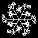
#3 Snowflake Dendrites
A single recursive branching structure is generated with a fixed random seed, then drawn 6 times at 60-degree intervals to create a snowflake with C6 rotational symmetry.
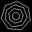
#4 Concentric Polygons
Nested regular polygons of the same type (e.g. all pentagons) drawn at decreasing radii with optional incremental rotation, producing Cn rotational symmetry.
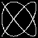
#5 Lissajous Curves
x = sin(a*t + delta), y = sin(b*t) with integer frequency ratios. Different (a, b) pairs produce distinct symmetry classes: bilateral, rotational, and combined reflective symmetries.
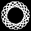
#6 Spirograph / Hypotrochoid
Curves traced by a point on a circle rolling inside a larger circle: x = (R-r)*cos(t) + d*cos((R-r)*t/r) y = (R-r)*sin(t) - d*sin((R-r)*t/r) The rotational symmetry order depends on the ratio R/r.
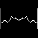
#7 Symmetric Random Walk
A random walk wanders on the right half of the image, then the entire path is mirrored across the vertical center axis. The result resembles Rorschach inkblots — organic yet perfectly bilaterally symmetric.
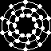
#8 Radial Mandala
Multiple concentric rings, each decorated with radially-distributed dots and connecting spokes. The fold number (4–12) is randomized per image, giving a variety of rotational symmetries.
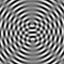
#9 Moire Interference
Two sets of concentric-circle gratings whose centres are placed symmetrically about the image centre. The resulting interference (Moire) fringes inherit bilateral symmetry along the axis connecting the two centres.
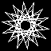
#10 Star Polygons
Star polygons {n/k} are formed by connecting every k-th vertex of a regular n-gon. Multiple nested star polygons at different scales and step sizes produce rich rotationally-symmetric figures.
#11 Rose Curves
Rhodonea curves r = cos(k*theta) traced in polar coordinates. When k is odd the curve has k petals; when k is even it has 2k petals. The resulting figure always has C_k or C_{2k} rotational symmetry.
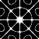
#12 Chladni Figures
The nodal lines of a vibrating square plate are approximated by: f(x,y) = cos(m*pi*x)*cos(n*pi*y) +/- cos(n*pi*x)*cos(m*pi*y) Pixels near f=0 are highlighted, producing the characteristic sand patterns seen in Ernst Chladni's experiments.
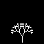
#13 Symmetric Binary Trees
A recursive binary tree where left and right branches always use the same angle and shrinkage factor, producing exact bilateral symmetry. The tree grows upward from the bottom centre of the image.
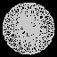
#14 Guilloche Patterns
Two hypotrochoid curves drawn with slightly different pen distances and a phase offset. The overlay of the two creates the intricate interlocking patterns seen on banknotes and security documents.
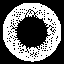
#15 Epicycloid Curves
Curves traced by a point on a circle of radius r rolling WITHOUT slipping on the OUTSIDE of a fixed circle of radius R: x = (R+r)*cos(t) - r*cos((R+r)*t/r) y = (R+r)*sin(t) - r*sin((R+r)*t/r) Complementary to the hypotrochoid (Experiment 6) which rolls inside.
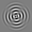
#16 Circular Membrane Harmonics
Standing-wave patterns on a circular drum head, approximated by: f(r, theta) = cos(n * theta) * sin(freq * r) where (r, theta) are polar coordinates from the image centre. The angular mode number n gives C_n rotational symmetry, while the radial frequency controls the number of concentric nodal rings.
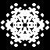
#17 Symmetric Dot Clouds
Random dots are placed inside a fundamental wedge and then replicated by the full dihedral group D_n (rotations + reflections), producing a symmetric scatter of filled circles.
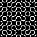
#18 Truchet Tiling
The image is divided into a grid of square cells. Each cell contains two quarter-circle arcs connecting midpoints of adjacent edges. The tile orientation (one of two types) is chosen randomly on the right half and mirrored to the left, enforcing bilateral symmetry. The resulting pattern forms continuous, smoothly curving labyrinths.
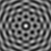
#19 Wave Interference Ring
N point sources are placed equally spaced on a circle centred in the image. Each source emits circular sinusoidal waves, and the pixel intensity is the sum of all wave amplitudes. The N-fold rotational symmetry of the source layout is inherited by the interference pattern.
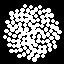
#20 Fermat Spiral / Phyllotaxis
Points are placed along a Fermat spiral using the golden angle: r_k = c * sqrt(k), theta_k = k * golden_angle This produces the sunflower-like phyllotactic pattern with approximate rotational symmetry related to Fibonacci numbers.
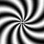
#21 Polar Modulated Gratings
Intensity is computed in polar coordinates as the product of an angular modulation and a radial oscillation: f(r, theta) = sin(n*theta + freq*r) This creates spiral-like interference fringes with approximate n-fold rotational symmetry.
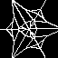
#22 Voronoi from Symmetric Seeds
Seed points are placed in a fundamental wedge and replicated by the dihedral group D_n. The Voronoi cell boundaries (where a pixel is equidistant from two seeds) inherit the same D_n symmetry.
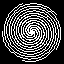
#23 Nested Archimedean Spirals
N Archimedean spirals (r = a + b*theta) are drawn with equal angular offsets of 2*pi/N, producing a pattern with C_N rotational symmetry. The spirals wind outward from the centre, creating a pinwheel effect.
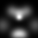
#24 Symmetric Gaussian Blobs
Random 2-D Gaussian blobs are placed on the right half of the image and mirrored across the vertical axis. The result is a soft, cloud-like image with exact bilateral symmetry — a continuous-tone analogue of the Rorschach inkblot (Experiment 7).
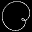
#25 Limacon Curves
The limacon is a family of polar curves: r = a + b*cos(theta). Depending on the ratio a/b the shape ranges from a cardioid (a=b) to a limacon with an inner loop (a < b), a dimpled limacon, or a convex curve. All limacons have bilateral (mirror) symmetry about the polar axis.
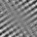
#26 Interference Lattice
N plane waves propagating at equally-spaced angles are summed: f(x,y) = sum_k sin(freq * (x*cos(angle_k) + y*sin(angle_k))) The resulting pattern has N-fold rotational symmetry and resembles 2-D crystallographic lattice / wallpaper patterns.
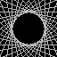
#27 Tangent-Line Envelopes
A family of straight lines tangent to a hidden circle is drawn. Each line is parameterised by an angle; the envelope of the family (the curve all lines are tangent to) is the circle itself, but the collection of tangent lines fills the image with a characteristic symmetric pattern. Multiple concentric tangent families create richer figures.
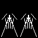
#28 Frieze Patterns
A small random motif is drawn inside a single cell and then tiled horizontally across the image. Each cell is also given internal bilateral symmetry (left-right mirror within the cell), producing one of the classic frieze-group symmetry types.
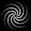
#29 Pinwheel Sectors
The image is divided into 2*N alternating bright/dark curved sectors that spiral outward from the centre. The curvature comes from rotating the sector boundary angle as a function of radius. The result has C_N rotational symmetry.
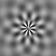
#30 Damped Radial Harmonics
A radial pattern combining an angular cosine mode with a damped radial sinusoid: f(r, theta) = cos(n*theta) * exp(-r/sigma) * sin(freq*r) The exponential decay confines the pattern near the centre, while the angular mode gives C_n or D_n symmetry.
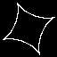
#31 Hypocycloid
A point on the rim of a circle of radius r rolling INSIDE a fixed circle of radius R traces a hypocycloid. When R/r = k (integer) the curve has k cusps and D_k symmetry. k=3 : deltoid k=4 : astroid k=5+ : higher cusps
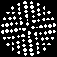
#32 Concentric Dot Rings
Dots are placed on concentric rings of increasing radius. Each ring has fold * ring_index equally-spaced dots, so inner rings are sparser and outer rings denser. The global pattern has D_{fold} symmetry.
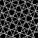
#33 Rotated Line Grids
N sets of equally-spaced parallel lines are drawn at uniformly separated angles (2*pi/N apart). The overlay of the grids produces interference patterns with C_N rotational symmetry.
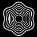
#34 Symmetric Contour Maps
Gaussian blobs are placed with D_n symmetry (like Experiment 24) and their sum is computed as a smooth field. Instead of displaying the raw field, iso-contour lines at evenly-spaced thresholds are drawn, producing a topographic-map pattern with D_n symmetry.
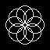
#35 Overlapping Circles
N circles of equal radius are centred on the vertices of a regular N-gon. Only the circle outlines are drawn, so the overlapping regions create petal- and lens-shaped intersection arcs. The arrangement has D_N dihedral symmetry.
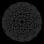
#36 Complete Graph on Regular n-gon
n vertices are placed on a regular polygon and every pair is connected by a straight line, drawing the complete graph K_n. The result is a dense web of chords with D_n dihedral symmetry.
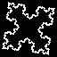
#37 Koch-like Fractal Boundaries
Starting from a regular polygon (3-6 sides), Koch subdivision is applied to every edge for 2-4 iterations. Each iteration replaces every straight segment with four segments forming an equilateral bump, producing a fractal boundary with D_n symmetry.
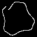
#38 Superformula Curves
The Gielis superformula defines a polar curve: r(theta) = [ |cos(m*theta/4)/a|^n2 + |sin(m*theta/4)/b|^n3 ]^(-1/n1) Varying the parameters produces circles, polygons, stars, flowers, and many organic-looking shapes, all with C_m rotational symmetry.
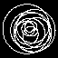
#39 Harmonic Orbits
The trace of a sum of K circular motions at integer frequencies: z(t) = sum_k A_k * exp(i * f_k * t) This generalises the 2-frequency spirograph to 3-5 harmonics, producing intricate closed curves whose symmetry depends on the GCD of the frequencies.
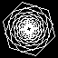
#40 Spiraling Regular Polygons
Nested regular k-gons are drawn at exponentially-decreasing radii with a constant angular step between successive layers, creating a spiral-vortex effect. Unlike Experiment 4 (linear radius, small rotation), this uses exponential shrinkage and larger twist, so the polygons converge dramatically toward the centre.
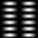
#41 Rectangular Quantum Modes
Probability density |psi_{m,n}|^2 = sin^2(m*pi*x) * sin^2(n*pi*y) of a quantum particle confined to a 2D square well. The result is a smooth, grid-like intensity field with D2 or D4 symmetry depending on whether m equals n.
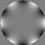
#42 Zernike Polynomial Modes
Zernike polynomials Z_n^m(r, theta) = R_n^m(r) * cos(m*theta) form the standard orthogonal basis on the unit disk. They describe optical wavefront aberrations: defocus, astigmatism, coma, trefoil, spherical aberration, etc. Each image shows a single Zernike mode on a circular aperture with smooth intensity gradients.
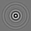
#43 Beating Radial Waves
Two circular waves with slightly different frequencies emanate from the image centre. Their sum sin(f1*r) + sin(f2*r) equals 2*cos(df*r/2)*sin(fc*r/2) where df = f1-f2 and fc = f1+f2, producing concentric ripples whose amplitude slowly pulses — the classic "beat" phenomenon. The pattern has full SO(2) (circular) symmetry.
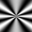
#44 Double-Slit Interference
Two coherent point sources are placed symmetrically about the image centre (along the vertical axis). The intensity at each pixel is the squared magnitude of the sum of two circular waves: I(x,y) = |exp(i*k*r1) + exp(i*k*r2)|^2 = 2 + 2*cos(k*(r1 - r2)) This produces the classic hyperbolic interference fringes with bilateral symmetry about both axes.
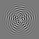
#45 Superposed Harmonic Modes
A sum of 2-5 randomly-chosen angular-radial harmonic terms: f(r, theta) = sum_k A_k * cos(n_k * theta + phi_k) * sin(freq_k * r) Each term is like a single drum mode (Experiment 16), but the superposition of multiple modes at different angular orders and radial frequencies creates rich, complex wave fields that combine the symmetries of the individual modes.